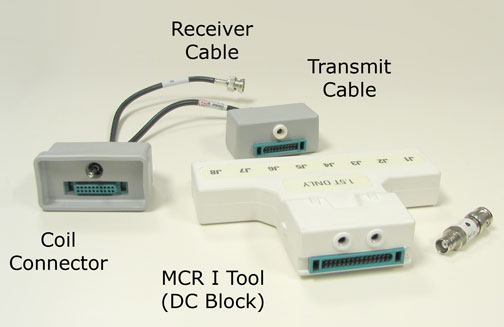

- 00000018WIA306A8E20GYZ
- id_131061543.0
- Aug 29, 2019 1:42:07 AM
Multi-coil Receive Chain (MCR) Tool
Prerequisites
| Required persons | Preliminary requirements | Procedure | Finalization |
|---|---|---|---|
| 1 | Not Applicable | 30 minutes | Not Applicable |
| Item | Quantity | Effectivity | Part number | Manufacturer |
|---|---|---|---|---|
| TLT phantom in the head loader | 1 | - | - | - |
| Head Loader Positioner Pad | 1 | - |
5110241 | - |
| MCR Tool | 1 | - |
2354598 | - |
| MCR Tool | 1 | - |
2393812 | - |
| ||||
| Condition | Reference | Effectivity |
|---|---|---|
|
Software revision 10.0 or greater has the necessary software needed to run the MCR Tool. | - | - |
About this task
This tool has a unique functionality and is not simply an “older version” or the MCR 2 and MCR 3 tools. Unlike the MCR 2 or MCR 3 tools, its purpose is to test the receive chain between the legacy connector and the 16-channel Switch.
Running the Tool
Procedure
- When the head data collection is complete, install the Multi-coil
Receive Tool in the Multi-coil Quick-Disconnect receptacle. See Figure 5.
Figure 4. MCR Tool Kit 
Figure 5. MCR Tool - Connector Connections 
- After the test is completed, the individual channel SNR results
are displayed. See Figure 6. Review the data for discrepancies
in SNR from channel to channel. See “Example Data” in Figure 9.
In this example you can see that SNR is very consistent from channel to channel (despite the gain variations) except for receive path 4. This indicates there is a single path failure that needs to be corrected. Refer to the T/S block diagrams available on the MCR Documentation menu or at MCR Troubleshooting Diagrams. These block diagrams can be used to identify which components to troubleshoot.
Figure 6. 
- To view the Log File, in the Multi-coil Receive Chain Test window,
select File, then View Log File. See below.
Figure 8. VIEWING LOG FILE 
Figure 9. 8-CHANNEL EXAMPLE DATA 
To isolate the problem depicted in Figure 7, select the Test single channel mode radio button in the MCR window, and test channel 4. Using the block diagram as a guide, substitute components from a neighboring receive path until the failing component is identified.
Tip: First view the images that were used in the SNR measurement before beginning the troubleshooting process. You may see something, such as a zipper artifact or something else, that makes it look like there is an SNR problem.
If all the channels have similar SNR (MCR passes), troubleshoot the specific surface coils that are causing the problem. (Check the coil config, external and internal cables, pin diodes, etc.)
Troubleshooting MCR Failures
About this task
If you closed the Multi-coil Receive Chain Test screen without selecting File, then Quit on the Multi-coil Receive Chain Test screen , you will see this message shown in Figure 10. Although it does not appear on the desktop, the previous Multi-coil Receive Chain Tool session is still running and must be closed before you can start a new session. To close the previous session, follow these steps:
Procedure
- From the Service Desktop Manager, open a C-shell.
- In the winterm window:
- Type su root and press Enter
- At the password prompt, type operator and
press EnterNote:
It is possible that the customer changed the default password. If you cannot log in, contact the customer for the correct password.
- Type /usr/g/service/cclass/mcr/kill_mcr and press Enter
- When a multi-digit number appears (confirming that the command was processed), start a new Multi-coil Receive session by following the instructions in Running the Tool.
Finalization
Finalization
No finalization steps.